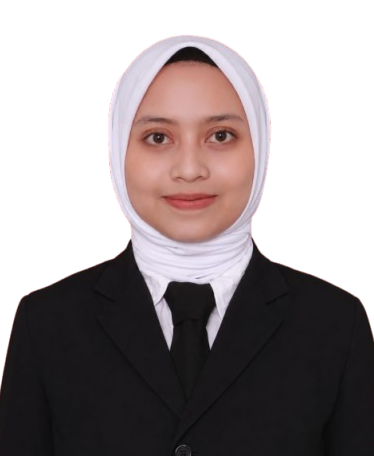

•
Oleh:
Satgas PPKPT hadir untuk mendampingi, melindungi, dan menindaklanjuti setiap bentuk kekerasan secara adil, tegas, serta dijamin kerahasiaannya.
Sesuai Permendikbudristek, Satgas PPKPT memberikan perlindungan penuh terhadap pelanggaran-pelanggaran berikut:
Tindakan merendahkan, menghina, menyerang, atau perbuatan lainnya yang bernuansa seksual secara fisik maupun non-fisik/siber tanpa persetujuan.
Tindakan menyakiti, mengintimidasi, atau mengucilkan secara fisik, verbal, atau psikologis yang dilakukan berulang atau berpotensi terjadi lagi.
Pembedaan perlakuan, pengancaman, atau pemaksaan kehendak berdasarkan suku, agama, ras, gender, status sosial, atau kondisi fisik/disabilitas.
Setiap perbuatan melukai, menyiksa, atau melakukan kontak fisik dengan atau tanpa alat bantu yang menimbulkan rasa sakit, luka, atau kematian.
Perbuatan nonfisik yang mengakibatkan ketakutan, hilangnya rasa percaya diri, rasa tidak berdaya, atau penderitaan psikis berat pada seseorang.
Stiap keputusan, aturan, atau tindakan—baik tertulis maupun tidak tertulis—dari lembaga pendidikan yang berpotensi atau nyata menimbulkan kekerasan fisik, psikis, atau merugikan hak-hak warga satuan pendidikan.
Kumpulan dokumentasi kegiatan, sosialisasi, dan informasi terkini dari Satgas PPKPT STIKes Tengku Maharatu.
Satgas PPKPT STIKes Tengku Maharatu terdiri dari perwakilan Dosen, Tenaga Kependidikan, dan Mahasiswa yang ditetapkan berdasarkan SK Ketua STIKes Tengku Maharatu.
Unsur Dosen / Prodi S1 Keperawatan
Unsur Dosen / Prodi S1 Kebidanan

Program Studi DIII Kebidanan
Program Studi S1 Keperawatan
Bagian Kemahasiswaan
Perwakilan BEM / Mahasiswa
Perwakilan Mahasiswa
Perwakilan Mahasiswa
Prosedur penanganan laporan dilakukan secara profesional, netral, dan terstruktur.
Pelapor mengisi formulir WhatsApp. Satgas melakukan verifikasi awal keberadaan aduan.
Pengumpulan keterangan saksi/bukti serta pemberian perlindungan/konseling awal jika dibutuhkan.
Satgas menyusun hasil analisis dan rekomendasi sanksi atau pemulihan untuk Pimpinan Kampus.
Pelaksanaan keputusan pimpinan serta pengawasan perlindungan bagi korban/pelapor.
Data ini akan diteruskan secara otomatis ke nomor resmi WhatsApp Satgas PPKPT STIKes Tengku Maharatu. Identitas Anda dijamin kerahasiaannya.